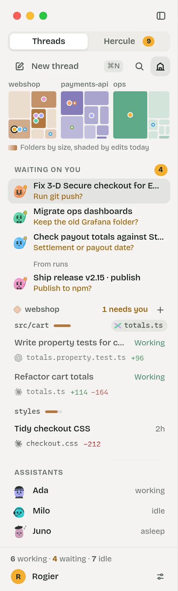
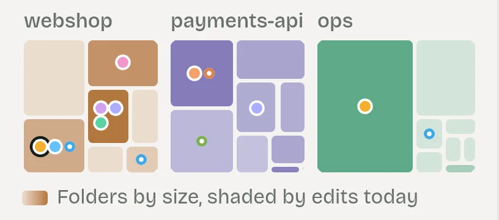

A minimap on top, then project, area, thread.
The minimap is a treemap of each repository: folders sized by lines, shaded by today's edits, a dot per agent in its colour and a marigold dot for each that waits on you. Tap a folder to filter the list, and every mode, to that area.
Below it: Waiting on you, three and then "n more", as today. Then each project's areas, busiest first: a path, a heat bar, and a crossing chip when two sessions share a file there. A row keeps today's 52px; its second line says the file the thread is in now and its diff. Threads that only read sit in the Library.
While the overview is open the sidebar is its index: a tap selects, a second tap opens.

